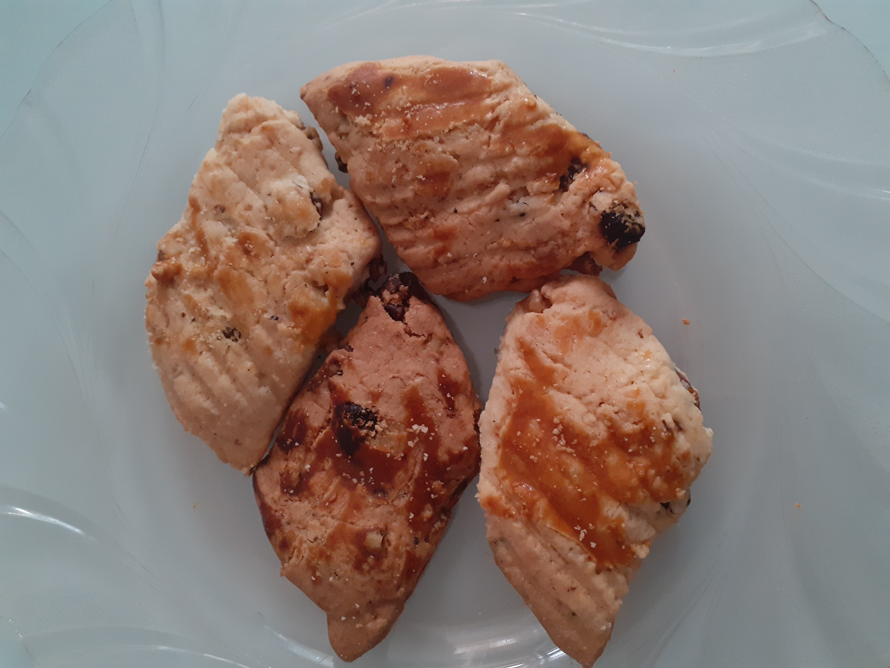
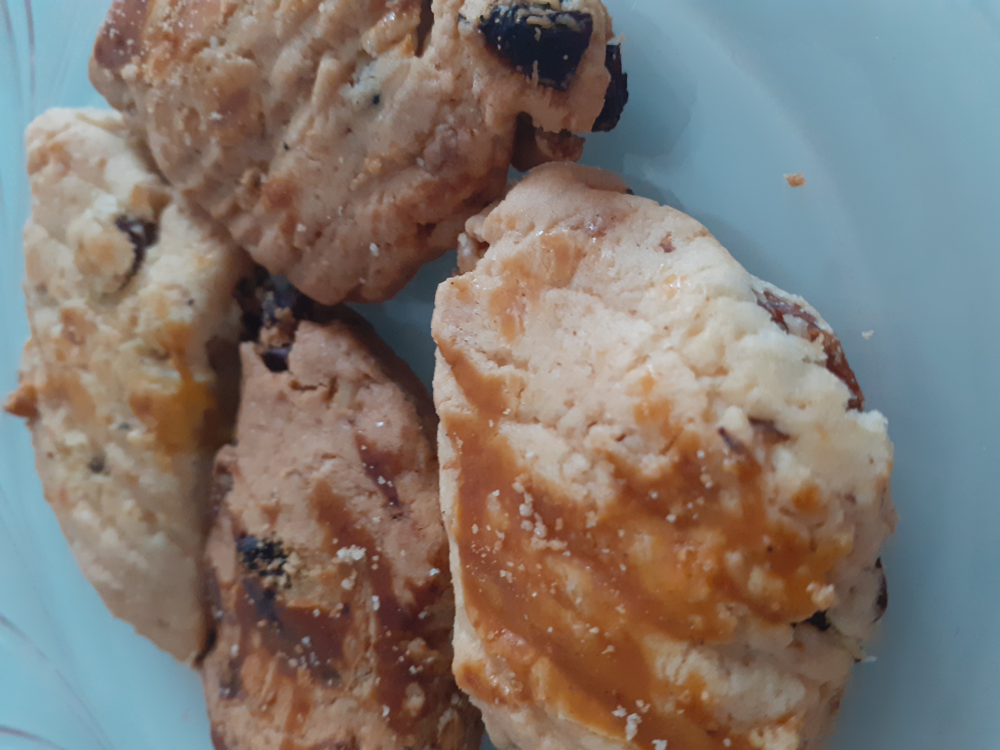

Kuru Üzümlü Cevizli Kurabiye
Kuru Üzümlü Cevizli Kurabiye Tarifi İçin Malzemeler
- 250 gr yumuşamış tereyağı veya margarin
- 1 çay bardağı sıvı yağ
- 1 su bardağı toz şeker
- 2 adet yumurta (1 tanesinin sarısı üzerine)
- 1 paket kabartma tozu
- Aldığı kadar un
- 1 küçük kase kuru üzüm
- 1 küçük kase kırılmış ceviz
Üzeri için:
Kuru Üzümlü Cevizli Kurabiye Tarifi Nasıl Yapılır?
- Hamuru için; yağlar, yumurta ve toz şekeri bir kapta buluşturup şeker eriyene kadar karıştırın.
- Ardından kabartma tozunu ilave edin. En son unu azar azar ekleyerek yumuşak bir hamur hazırlayın.
- Hamurun içine kuru üzüm ve cevizi de ekleyip bir miktar daha yoğurun.
- Hamurdan büyük parçalar koparın ve uzunlamasına açın.
- Bir bıçak yardımıyla verev şeklinde kesin.
- Üzerlerine yumurta sarısı sürüp çatalla çizik atın.
- Önceden ısıtılmış 180 derecelik fırında üzerleri kızarana kadar pişirin.
~~AFİYET OLSUN~~

